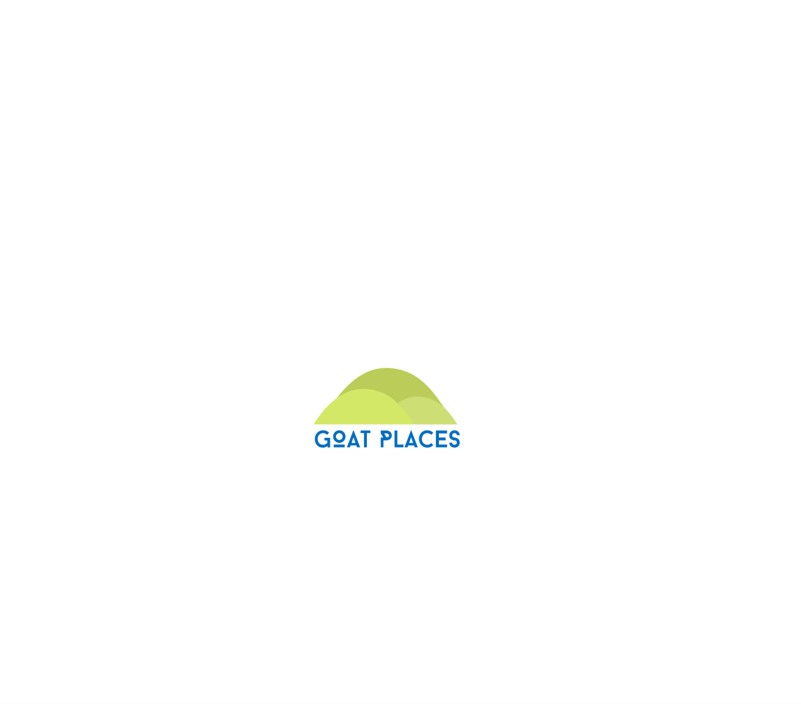
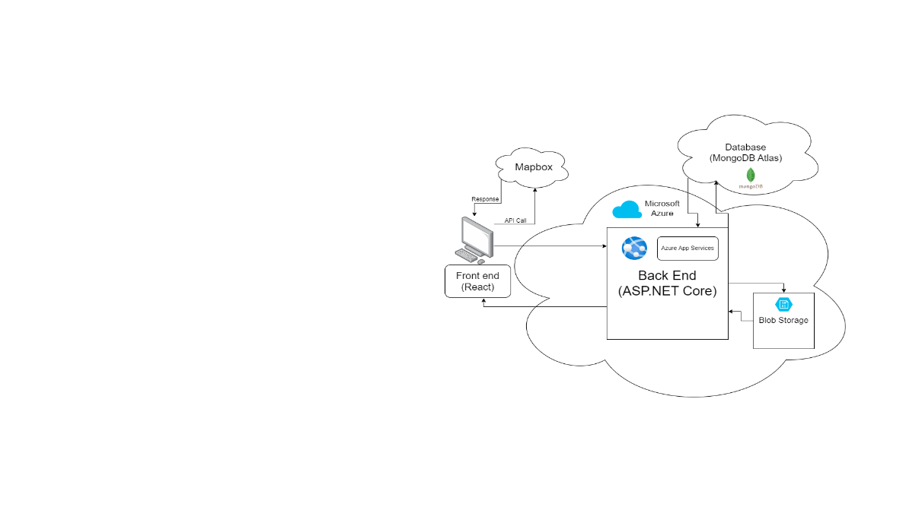

Senior Project:
Goat Places
August 2023 - May 2024
Goat Places aims to address the common challenges faced by new and current St. Edward’s University students. This application provides a modern and intuitive platform to enhance the overall campus experience by offering a centralized hub for finding, creating, and sharing events on campus.

Overview
Watch our demo video to see what we have working so far!

Role & Responsibilities
Frontend, MapBox, Project Manager
Technologies Used
- Frontend: React.js
- Mapping Platform: Map Box
- Version Control: GitHub
- Project Management: Jira
- Communication: Slack

Challenges & Solutions
A challange I have faced and how I overcame it...
- A team member encountered difficulties with our map development, struggling to make improvements to our initial HTML-based map of the University.
- To support my team member and ensure progress for our next presentation, I prioritized completing my tasks, as they were crucial for demo day. Despite time constraints, I successfully finalized my work and took over the map development. Within a few days, I created and tested a fully functional map (despite having no prior Mapbox experience), ensuring we had a presentation-ready product.
Challenge
Solution
Achievements & Outcomes
Important note: While the project is still in progress, we are working to finalize the following features: